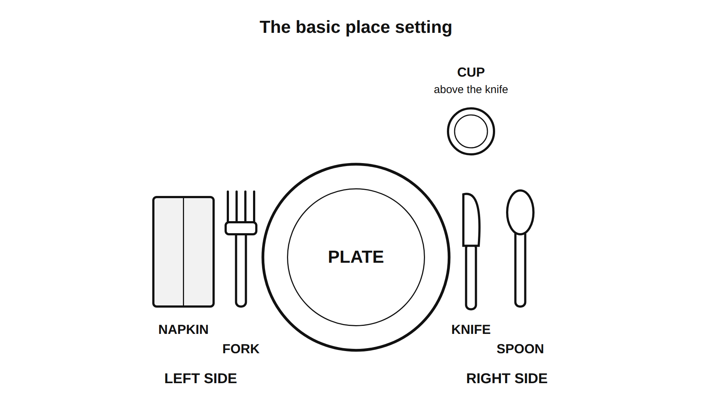
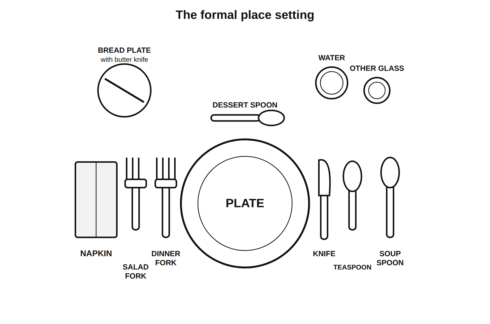

Slide outline for Lesson 6.11. Thirteen slides, one day. Slides 4 and 5 are the review deck for item 11 on the Cooking Methods Check. Cover the wall paths before slide 13.
The Table, Four Ways
- Unit 6, Lesson 6.11
- Topic 6.2 Food Preparation Methods and Science
- Today: a place setting, three other ways to serve, and the Methods Check
Teacher notes
Image: four small photos in a row: a set table, a shared platter, a bowl with chopsticks on a rest, a stacked tiffin carrier.
Do now
- Draw a place setting from memory
- Plate, fork, knife, spoon, cup, napkin
- Ninety seconds, no looking, no penalty for being wrong
Teacher notes
Hold up two drawings that disagree without saying which is right. Then uncover the three display stations.
Three ways to eat a meal, none with a fork on the left
- The place setting you just drew is one system out of many
- Every one of them was built to solve the same problem
- Your job today is to find the problem
Teacher notes
Image: the three display stations, photographed from above, no food in them.
This is the hook.
The basic place setting

- Plate center, about an inch from the edge
- Fork left. Napkin left of the fork
- Knife right, blade turned in toward the plate
- Spoon right of the knife. Cup above the knife
Teacher notes
Two reasons the blade faces in: it is safer, and it is the courtesy. Students set it and a partner checks and initials.
The formal setting and the outside-in rule

- Use the utensils in the order the courses arrive
- Work from the outside toward the plate
- Soup first, so the soup spoon is farthest right
- Salad next, so the salad fork is farthest left
Teacher notes
Say the useful version out loud: if you do not know which fork, start at the outside and work in. That one sentence is what a formal setting is actually for.
Station 1, the shared platter
- One dish in the middle, small plates for each person
- The host serves, or everyone serves themselves with the serving spoon
- Guests and elders are served first
- Nobody takes the last piece without offering it
Teacher notes
Image: a large platter with a serving spoon and four small plates around it.
Station 2, chopsticks
- A pair used to lift food from a shared dish to your own bowl, then to your mouth
- They rest on a rest or across the bowl, never standing up in the food
- Do not spear food and do not point with them
Teacher notes
Image: a pair of chopsticks on a rest beside a rice bowl.
The right hand (the bowl beside Station 3)
- In many cultures food is eaten with the fingers of the right hand, often with bread as the scoop
- Hands are washed at the table, before and after
- The host offers first and waits until guests have started
Teacher notes
Image: a bowl of water and a folded towel beside a plate of flatbread.
Station 3, bento or tiffin
- Food in separate compartments, or stacked metal tins
- Carried from home or delivered
- Packed for balance and variety
- Returned clean
Teacher notes
Image: an open bento box with four compartments, and a three-tier stacked tiffin carrier beside it.
What all four have in common
- Every one of them has a rule about who gets served first
- And a rule about how much of the shared food is yours
- Every system exists so people get fed fairly and nobody has to guess
Teacher notes
Take the answer from the class before you put it on the screen. This is the "find the problem" payoff from slide 3.
Hosting basics, across all four
- Serve others before yourself
- Pass in one direction, and pass to the person who asked
- Wait until everyone has food before you start
Teacher notes
These three cross every system on the wall. They are also the three that get used on serving day in the Feed the Class project.
Write our agreement
- Three to five rules
- Each one is a thing a person does
- "Be respectful" is not a rule. "Serve the person next to you before you serve yourself" is a rule
- Then: one hard case. A situation where your rule would be difficult, and what you would do
Teacher notes
Groups of four draft, three groups read their strongest rule, class votes, final version goes on the wall. It governs serving day in Lesson 6.17.
Cooking Methods Check
- 12 items, 15 minutes
- Dry and moist heat, which method for which food, the leavening experiment, a lab scenario, a place setting item
- You may use your vocabulary card
- Desks clear, wall covered
Teacher notes
Sixty seconds of review before you hand it out: the two heat columns, the leavening rule, the four batch table, the place setting diagram. Read the directions aloud once. Collect at the bell. Retakes are allowed once after a review, per the Grading Plan, and the review fits in the first five minutes of the Feed the Class launch.